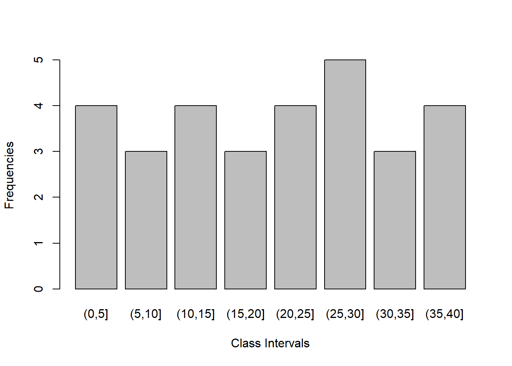

In this Chapter we will discuss how to create a frequency table and calculate cumulative frequency and relative frequency.
Let us consider the following example:
# Enter the data
data=c(24,23,17,13,25,30,22,28,38,39,1,4,9,2,10,7,36,
14,3,31,33,37,11,19,15,16,29,35,27,26)
# Find out the minimum and maximum of the data
summary(data) Min. 1st Qu. Median Mean 3rd Qu. Max.
1.00 11.50 22.50 20.80 29.75 39.00 # create class intervals
breaks=seq(0,40,5)
# create frequencies
freq=cut(data,breaks)
# conver the frequencies as a table
freq=table(freq)
freqfreq
(0,5] (5,10] (10,15] (15,20] (20,25] (25,30] (30,35] (35,40]
4 3 4 3 4 5 3 4 # Calculate total frequencies
N=sum(freq)
# calculate cumulative frequencies
cum.freq=cumsum(freq)
# calculate relative frequencies
rel.freq=freq/N
# combine all calculated values in one table
cbind(freq,cum.freq,rel.freq) freq cum.freq rel.freq
(0,5] 4 4 0.1333333
(5,10] 3 7 0.1000000
(10,15] 4 11 0.1333333
(15,20] 3 14 0.1000000
(20,25] 4 18 0.1333333
(25,30] 5 23 0.1666667
(30,35] 3 26 0.1000000
(35,40] 4 30 0.1333333barplot(freq, xlab = "Class Intervals", ylab = "Frequencies")
Exercise:
- Construct a frequency table from the following table- 46 40 29 24 8 3 33 49 17 35 28 34 27 43 26 37 4 5 42 10 22 13 19 9 41 14 11 50 36 32 30 47 12 44 38 15 31 7 23 25
- Construct a frequency table from the following table and draw the bar diagram. 40 21 2 44 17 13 49 46 28 6 20 19 37 50 41 1 4 7 38 32 3 25 39 34 14 22 27 26 30 5 31 45 23 11 8 29 24 18 47 42 9 33 48 36 15
Copyright © 2018 Saurav Sarma. All rights reserved.
Powered by ProStatika Analysis ™